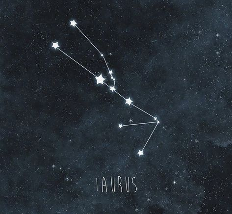
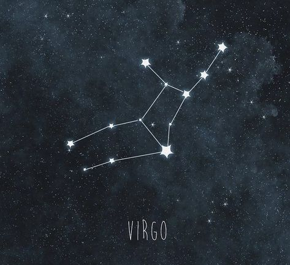

❝Earth signs are "grounded" and the ones that bring us down to earth. They are mostly conservative and realistic, but they can also be very emotional. They are connected to our material reality and can be drawn to material goods. They are practical, loyal, and stable, and they stick by their people through hard times. The Earth Signs are: Taurus, Virgo, and Capricorn.❞
TAURUS
❝They generate satisfaction and respect in people around them because they are pleasant, loving, and honest. Taurus natives have a strong desire for social and corporate stability. They have a strong desire for extravagance, contentment, and great things, which can lead to intense neediness.❞

VIRGO

❝On the appearance, Virgos are humble, self-effacing, industrious, and practical, but under the surface, they are frequently natural, kind, and sympathetic, as befits their zodiac sign. Virgoans are methodical and quick thinkers, yet they have so much mental energy that they are frequently stressed and tense.❞
CAPRICORN
❝Pragmatic and proud, Capricorns want to be praised both for the reasonable actions they take and their approach to life. The sea-goat always has their eye on the prize, be it material matters or emotional fulfillment. By keeping focused on what they want, Capricorns stay motivated.❞